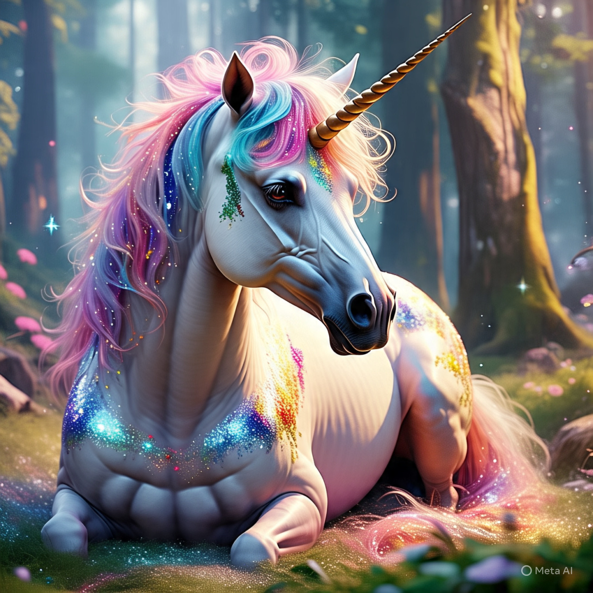
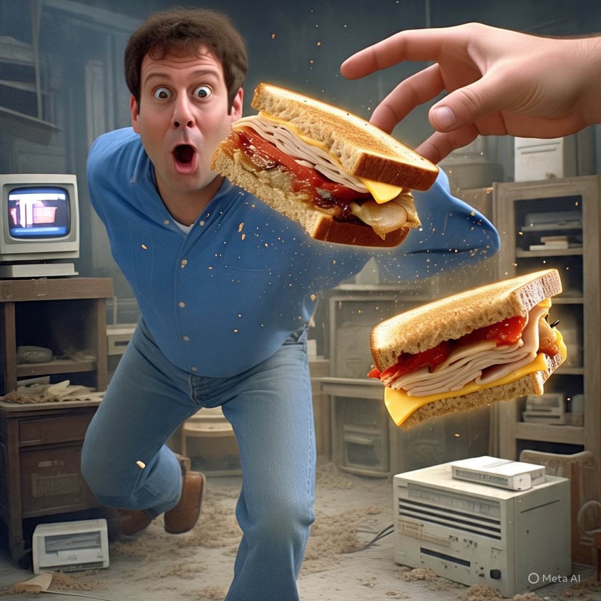
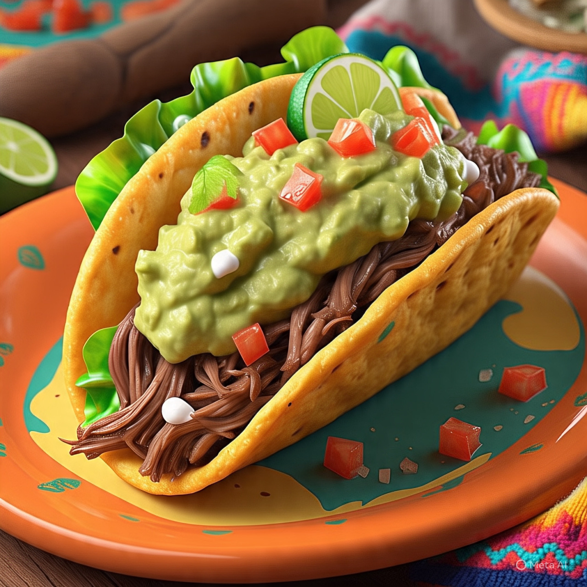

🦄 Científicos descubren que los unicornios eran reales... pero se extinguieron por exceso de glitter ✨
Un equipo de arqueólogos reveló fósiles de unicornios en Siberia, confirmando su existencia. Sin embargo, según el estudio, su extinción se debió a una "epidemia de glitter" en la Edad Media, cuando los unicornios se revolcaban en montañas de purpurina tóxica. "Eran criaturas glamurosas, pero poco prácticas", admitió el científico líder

🥪 Hombre logra teletransportar su sandwich... pero aparece en 1997 ⏳
Un físico aficionado creó un "teletransportador de comida" en su garaje. Tras enviar un sándwich de jamón, recibió una foto polaroid desde el pasado: el pan aparece en la mesa de un restaurante de los 90 con un mensaje: "Gracias por el almuerzo, viajero del tiempo"
🛹 Abuelo de 90 años gana campeonato de skate: 'El secreto es la sopa de lentejas'
Ramón, un nonagenario español, arrasó en el X-Games con un kickflip sobre un banco del parque. "La clave está en mi dieta: sopa de lentejas tres veces al día y siestas estratégicas", declaró. Sus rivales adolescentes quedaron "en shock" y ahora exigen recetas.
📱 WhatsApp introduce modo 'auto-respuesta incómoda': ahora tu teléfono dirá 'jajaja' cuando no sepas qué contestar 🤖
La nueva actualización incluye un botón de emergencia para reír nerviosamente en chats. Usuarios reportan que el sistema también añade "sí, claro" automático a mensajes de jefes o ex-parejas.

🌮 Extraterrestres exigen tacos como moneda interestelar: 'El guacamole es universal'
Tras aterrizar en México, seres de Alpha Centauri declararon que la Tierra solo será admitida en la "Federación Galáctica" si comparte su receta de salsa verde. NASA ya prepara un cohete-taquero.
🏴☠️ Piratas del Caribe del siglo XXI roban yates... pero solo si no tienen gatos a bordo 🐈
Una banda de ladrones románticos dejó una nota en un barco robado: "Respetamos a los michis. PD: Su gatito es adorable". La Interpol los describe como "amantes de los animales con mala orientación laboral"